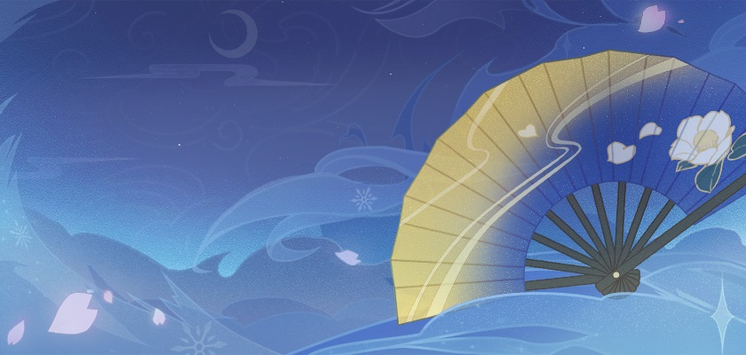
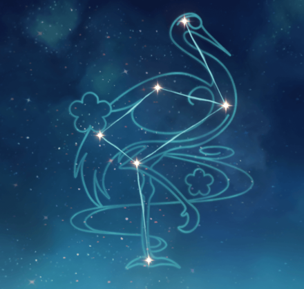

Ayaka
Kamisato Ayaka (Japanese: 神かみ里さと綾あや華か) is a playable Cryo character in Genshin Impact. She is the oldest daughter of the Kamisato Clan and sister of Kamisato Ayato. Being beautiful, elegant, and graceful, the common folk have nothing to bad-mouth Ayaka about. Because of her social status as the eldest daughter of the Kamisato Clan of the Yashiro Commission and as the Shirasagi Himegimi, Ayaka is seen as a model of perfection.
Appearance
Ayaka is a young woman of slightly below average height. She keeps her long, pale white-blue hair tied in a high ponytail by a black armored headdress accented with gold. Her hair is styled in a hime cut, with evenly chopped locks framing her face tied off with white accessories bordered with gold, fastened with bright pink cords tied in cloverleaf knots. Her light blue-gray eyes are accompanied by thick lashes and a mole underneath her left eye.
Her outfit, Flawless Radiance, is described as a kimono that displays the nobility and resilience of the Shirasagi Himegimi. It consists of a royal blue pleated knee-length skirt embroidered with an assortment of patterns, bearing gold accents and small white flower print, and black geta sandals with ankle-length white socks decorated by pink cloverleaf knots at the back. She has a black breastplate with a golden Kamisato Clan emblem in the center and matching armor platings on the sides of her skirt. Underneath her breastplate is a loose elbow-length shirt with gradients of blue to white. Her cuffs and collar on her top are navy with a variety of gold stripes. She wears black sleeves underneath the loose shirt, sling over her middle fingers, and covering both of her thumbs. On top of her black sleeves are white armored platings lined by gold metal, tied together by red knots. At the back of her outfit is a large royal blue bow, tied together by her Vision and another bright pink cloverleaf knot. The lower half of the ribbons darken in color with gold markings seemingly native to her homeland. As an accessory, she carries around a gold-navy fan that matches her skirt.
|
Rarity 5-star |
Weapon Polearm |
Element Geo |
Personality
Ayaka is a kind-hearted girl with a pleasant temperament who treats
others with politeness and courtesy. She holds the people of Inazuma
dear to her heart and often goes out of her way to personally assist
in all kinds of matters; being a member of the Yashiro Commission, she
feels that she must meet the people's needs. She is a perfectionist
with an earnest personality. Her dedication often moves people, and
those close to her gave her the honorary title of Shirasagi Himegimi
(Japanese: 白しら鷺さぎの 姫ひめ君ぎみ Shirasagi no Himegimi, "White
Heron Princess"). People in the neighborhood always talk about her
with sincere admiration.
Thanks to the influence of Ayaka's excellent upbringing, her heart is
as pure as crystallized ice. Just like the splendid colors reflected
as the ice crystals spin in the winter air, such is Ayaka's spirit.
While the people of Inazuma love her, it is also well known that she
has very few friends due to her upbringing — Thoma is her only known
friend until she met the Traveler. She is also busy to the point that
she doesn't have much free time, to begin with, so she has trouble
mingling with others. When not burdened with her duties, she shows a
tender, cute side to her.
But if you want to capture a heart hanging high in the sky, you must
have the ability to climb up the clouds. In other words, Ayaka is
eager to associate with people capable of achieving great feats — in
her eyes, friendships are dictated by fate, the same way she was
destined to wield her frost-covered sword.
In-Game info
Model Type |
Medium Female |
Birthday |
September 28th |
Constellation |
Grus Nivis, Story Quest Chapter |
Region |
Inazuma |
Affiliation |
Yashiro Commission, Kamisato Clan |
Special Dish |
Snow on the Hearth |
How to Obtain |
Event Wish - The Heron's Court |
Release Date |
July 21, 2021 |
Namecard
Zhongli: Planet Befall
Obtain: Reward for reaching Friendship Level 10 with Zhongli
Constellation
Meaning: Divine Stone